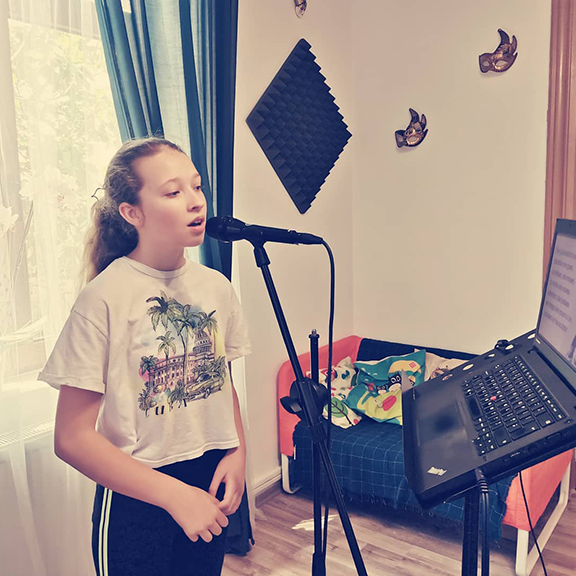

Lectiile de canto se adreseaza in primul rand copiilor si sunt individuale. In cadrul cursului se va urmarii formarea de abilitati specifice comunicarii prin limbaj artistic. Profesoara de canto are o pregatire specifica domeniului si un bogat repertoriu concertistic. Repertoriul instrumental si vocal pentru auditii este reprezentat prin suite instrumentale, miniaturi programatice, teatru muzical pentru copii, repertoriu pentru copii clasic si romantic /modern universal si modern /contemporan.
- Frecventa: saptamanal (1 sedinta pe saptamana) / 90 min
- Pret: 300 lei/modul 4 sedinte
- Orar: Luni : 18:30 - 20:00 (Grupa I), Marti : 18:30 - 20:00 (Grupa II)
Pentru cursurile de canto avem alaturi de noi pe Dna.Mihaela Dascalu si Dna.Viorica Lipan. In functie de grupa de varsta orele se impart conform tabelului de mai jos:
| Nume | Program | Varsta |
|---|---|---|
| Mihaela Dascalu | Luni/18:30 - 20:00 | 5-10 ani |
| Viorica Lipan | Marti/18:30 - 20:00 | 11-18 ani |